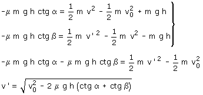
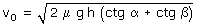
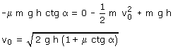

Total
Combinando los resultados obtenidos en subida y bajada resulta un sistema de incógnitas: v, v'

Meditación
A la vista del resultado parece que la velocidad inicial mínima que deberá tener la pelota para ir desde A hasta B sería:

y entonces resultaría que la velocidad de llegada sería 0... ¡pues no!
Para que la pelota llegue a B tendrá que llegar primero a la cima y eso requiere una velocidad mínima de lanzamiento que se puede obtener a partir de los resultados de la primera parte de este problema, haciendo v = 0:

Con esta velocidad inicial la velocidad de llegada sería: